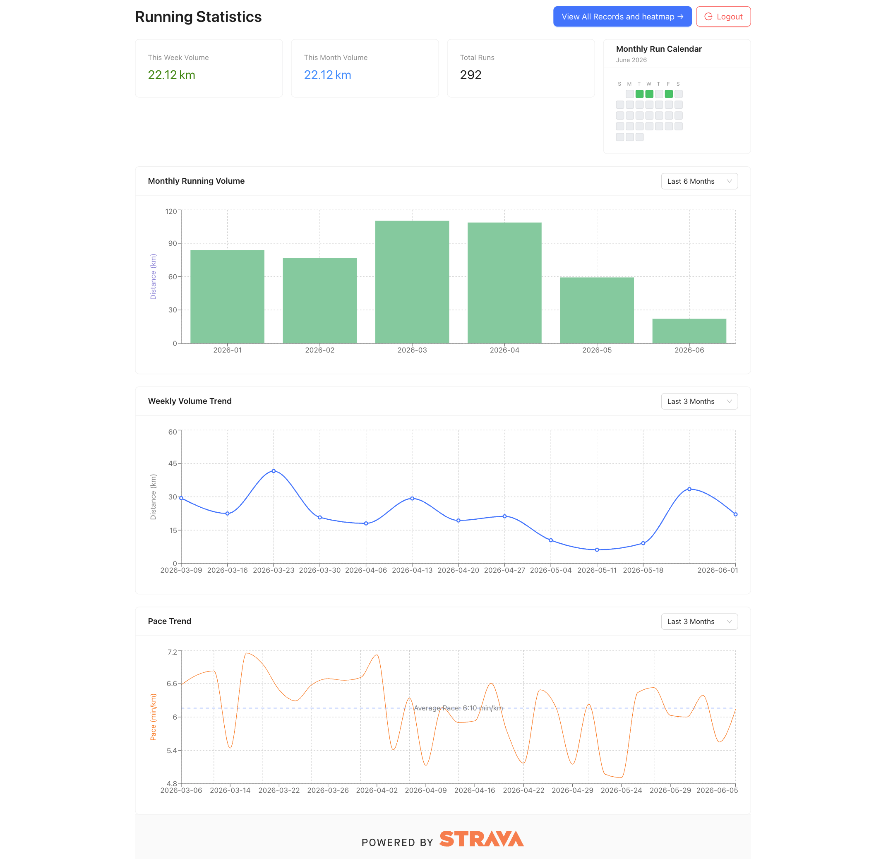

Risk-based QA judgment
I think beyond happy paths: edge cases, state management, test data, environment drift, user impact, regression scope, and release risk.
QA Automation Engineer / SDET
Open to QA Automation, SDET, and Software Developer in Test roles
I bring 3 years of QA and testing infrastructure experience from a high-traffic mobility platform, plus hands-on automation and development work with Java, Python, Selenium WebDriver, TestNG, API testing, SQL, Django REST Framework, React, Docker, AWS, and CI/CD. My strongest fit is QA automation work where testing strategy, code quality, and product risk all matter.
Why interview me
I think beyond happy paths: edge cases, state management, test data, environment drift, user impact, regression scope, and release risk.
I build maintainable UI and API test systems with page objects, data-driven scenarios, explicit waits, reporting, and CI-friendly execution.
My backend and full-stack project work helps me read code, debug failures, validate APIs, discuss root causes, and work closely with engineering teams.
Java, Selenium WebDriver, TestNG, Maven, WebDriverManager, Page Object Model, explicit waits, Extent Reports, GitHub Actions
REST API validation, Postman-style workflows, JSON payloads, SQL, PostgreSQL, test data design, data validation, regex
Regression planning, defect reporting, exploratory testing, edge-case analysis, environment control, flaky test reduction
Python, Java, JavaScript, Django REST Framework, Flask, React, REST APIs, ORM, JWT, OAuth 2.0
Git, GitHub Actions, Docker, Docker Compose, AWS ECS/Fargate, ECR, S3, CloudFront, CloudWatch Logs, Linux
Data structures, algorithms, machine learning foundations, PyTorch, applied cryptography
Professional Experience
Shanghai SAIC Mobility Technology and Service Co., Ltd | SAIC Motor Group mobility platform
Featured Projects
Full-Stack Quality Perspective
Full-stack running analytics platform
A React and Django REST Framework product that shows I can understand the systems I test: authentication, APIs, background jobs, data models, dashboards, cloud deployment, and user-facing workflows.

Stack
Python, Django REST Framework, React, PostgreSQL, Redis
Cloud
Docker, AWS ECS/Fargate, ECR, S3, CloudFront, CloudWatch
QA Automation
Java UI automation for SauceDemo checkout flows
A production-style Selenium WebDriver framework for validating core e-commerce journeys, built to show maintainable test architecture, command-line controlled login test data, reliable browser execution, and CI-ready reporting.
Login Strategy
3 modes
specific, random, type
Runner
TestNG
parallel ready
CLI Data
Account Params
test users controlled by command
Reports
HTML
with screenshots
Stack
Java 17, Selenium WebDriver, TestNG, Maven, WebDriverManager
Quality Signals
Page Object Model, explicit waits, command-line account overrides, JSON data, Extent Reports, GitHub Actions
-DloginUser=locked_out_user and -DloginPassword=secret_sauce without editing test code.Education
M.Sc. in Computational Sciences, May 2026
Cumulative average: 9.40 / 10.0. Relevant coursework: Artificial Intelligence, Machine Learning & Deep Learning, Applied Cryptography, Intro to Cloud Technologies.
B.Eng. in Communication Engineering, June 2021
Scholarship recipient.
Beyond Code
Running, tennis, swimming, and hiking keep me consistent outside work. I like long feedback loops, measurable progress, and the quiet discipline of improving week after week.
Let's talk
Best fit: teams where automation architecture, API quality, SQL validation, Selenium, CI workflows, and practical product risk judgment matter.